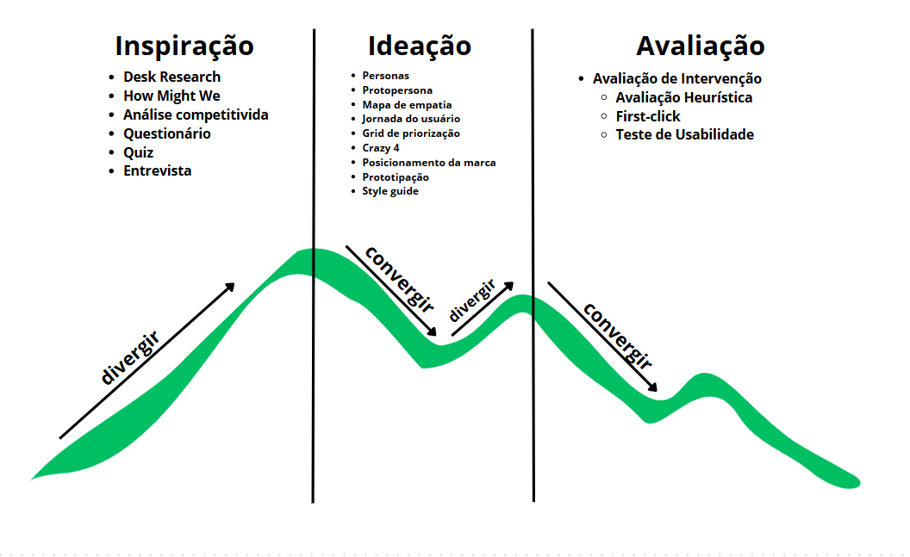

Roadmap
O que é?Roadmap é uma diagrama, semelhante a uma "mapa" para organizar todas as atividades executadas durante o processo de design.
- Neste projeto seguimos a metodologia do Processo de Design centrado no Humano, baseado nas etapas propostas pela organização Ideo, pioneira e mundialmente reconhecida na aplicação de designs centrados nos usuários.
